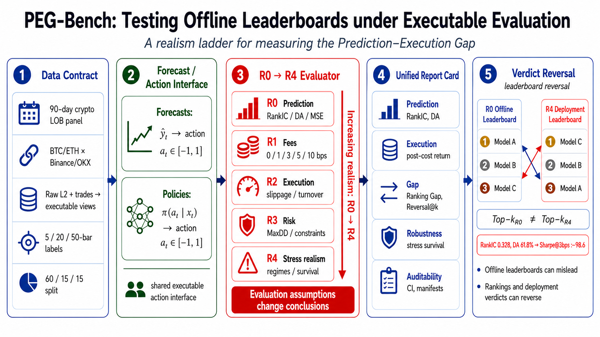
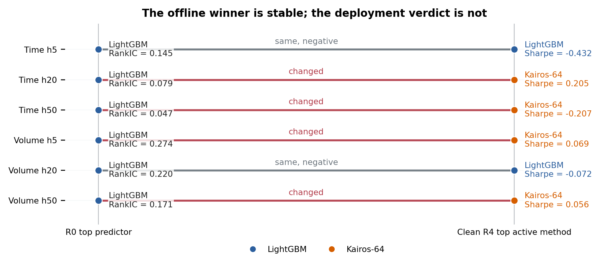
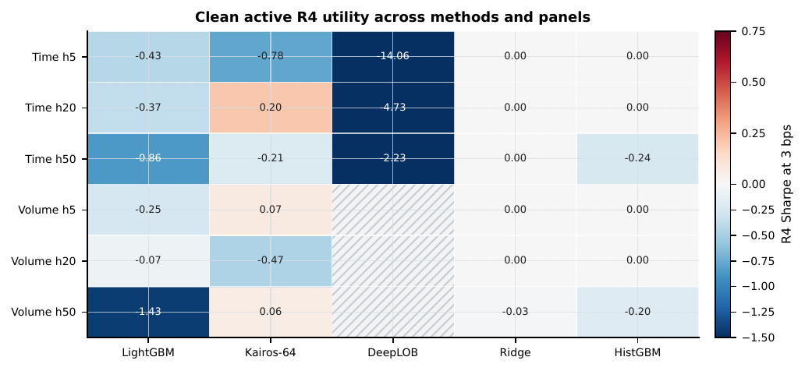
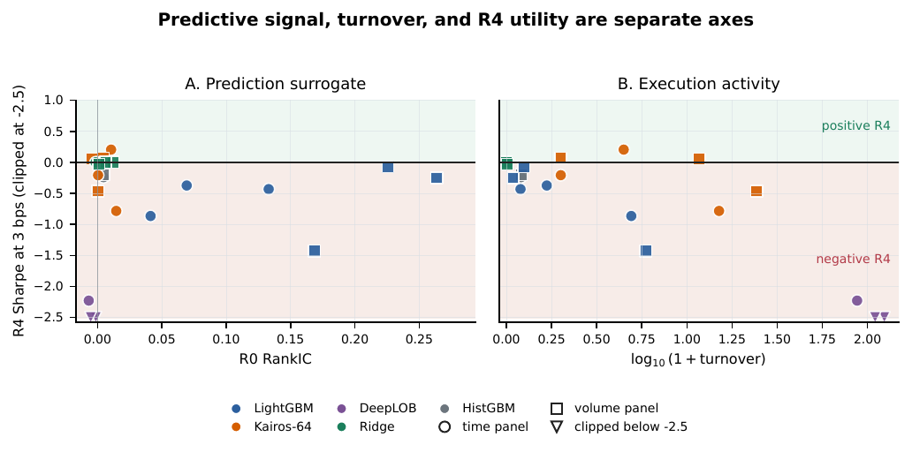

Prediction-Execution Gap Benchmark
When the offline winner is not the useful winner.
PEG-Bench makes a familiar evaluation failure measurable: a model can lead on prediction metrics, then lose its conclusion when forecasts become actions, fees, risk, and stress.
A benchmark protocol and audit artifact, not a claim of tradable alpha.

Completed 90-day artifact
Six time and volume panels. One frozen contract. No hand-picked winner.
The question
Does a better forecast still make a better decision?
Most model comparisons stop at R0: correlation, accuracy, or ranking quality. PEG-Bench keeps the same predictions moving through a shared action interface and asks what survives at R4.
The benchmark uses cryptocurrency limit-order books as a compact stress test for evaluation science. It does not present the market setting as evidence of production profitability.
Prediction quality should be the starting point of deployment evaluation, not its endpoint.PEG-Bench paper, conclusion
The evaluation ladder
One method. Five increasingly real questions.
- R0Prediction
RankIC, directional accuracy, MSE
- R1Fees
0 / 1 / 3 / 5 / 10 bps cost ladder
- R2Execution
Slippage, turnover, action path
- R3Risk
Drawdown and path-dependent utility
- R4Stress realism
Regimes, survival, and robustness
The evidence
Ranking quality and execution utility separate.
LightGBM is the strongest R0 predictor in all six completed panels. At the 3 bps headline setting, the clean-active R4 winner changes in four panels; in the two unchanged panels, that active winner remains negative after costs.
| Panel | R0 top predictor | R0 RankIC | R4 top active method | R4 Sharpe at 3 bps | Verdict |
|---|---|---|---|---|---|
| Time h5 | LightGBM | 0.145 | LightGBM | -0.432 | same, negative |
| Time h20 | LightGBM | 0.079 | Kairos-64 | +0.205 | changed |
| Time h50 | LightGBM | 0.047 | Kairos-64 | -0.207 | changed |
| Volume h5 | LightGBM | 0.274 | Kairos-64 | +0.069 | changed |
| Volume h20 | LightGBM | 0.220 | LightGBM | -0.072 | same, negative |
| Volume h50 | LightGBM | 0.171 | Kairos-64 | +0.056 | changed |
The table separates the clean-active R4 identity audit from the official RR@1 protocol universe.



What PEG-Bench fixes
A shared contract makes conclusions comparable.
- 90 days
BTCUSDT and ETHUSDT across Binance and OKX
- 60 / 15 / 15
Strict chronological train, validation, and test split
- 5 / 20 / 50
Time- and volume-bar horizons in each view
- R0 → R4
Prediction, cost, execution, risk, and stress report card
Read, inspect, reproduce
The evidence is packaged for an honest audit.
Release boundary
Auditable does not mean unrestricted.
This public release includes the evaluator, schemas, split and stress manifests, normalized evidence, generated tables, figures, and inspection samples.
It does not redistribute raw vendor L2 feeds, tick-level trades, or full processed tensors derived from licensed data. Full raw-data reconstruction requires authorized access to the underlying market-data provider.
Read the full release scope